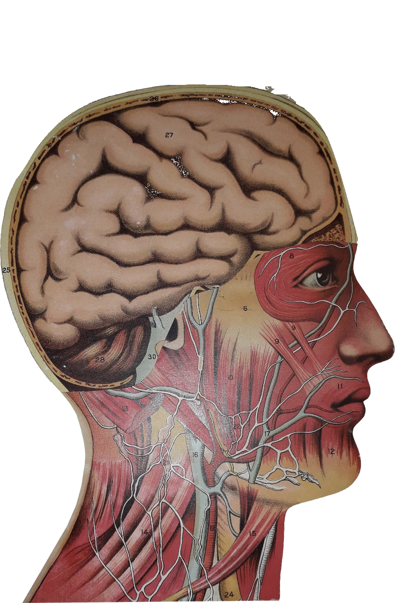
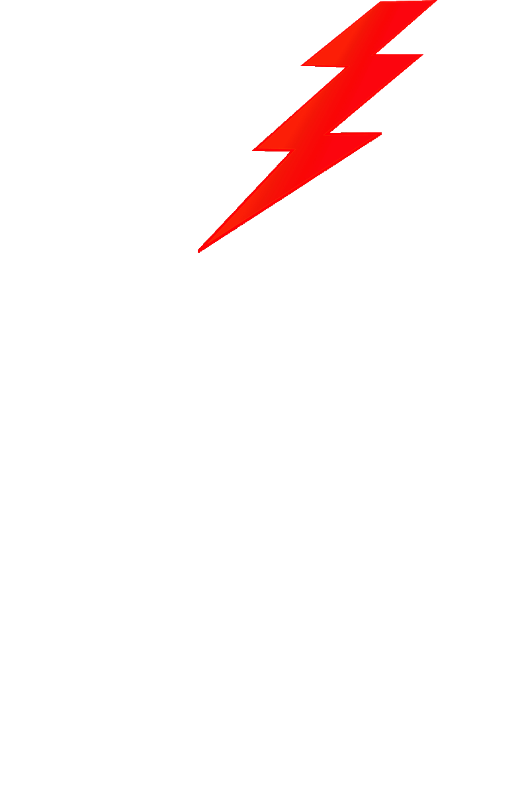

Editorial independiente · Buenos Aires
Rayo Rojo
Editorial
Narrativa, arte y rareza.
Libros que no existen en ningún otro catálogo.
Rayo
Rojo


Editorial
Editorial independiente · Buenos Aires
Narrativa, arte y rareza.
Libros que no existen en ningún otro catálogo.